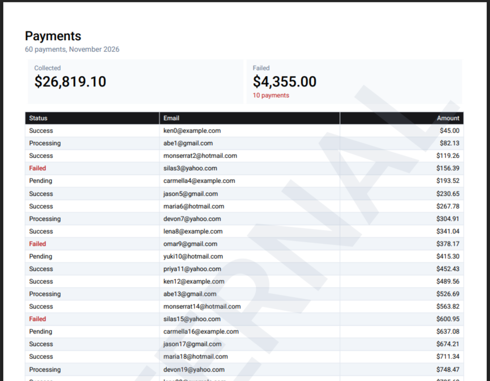

shadcn data table export to PDF
Add PDF export to the shadcn/ui data table from the payments example, then turn it into a report with a title, headline numbers and a watermark.
The shadcn/ui Data Table guide builds a payments table with TanStack Table: sorting, an email filter, a column toggle, row selection and pagination. It stops before export. This guide picks up there and adds:
- an Export menu with PDF, Excel and CSV;
- a "Download report" button that prints a title, headline numbers and a watermark above the table.

The files and names match the shadcn guide: data-table-features.ts, columns.tsx, data-table.tsx and the page. The shadcn guide uses TanStack Table v9, and so does this one; v8 notes are at the end.
Install#
npm install rowpine
npx shadcn add @rowpine/export-menurowpine builds the files in the browser. The export menu lands in components/export-menu.tsx as source, styled by your theme.
Let columns carry export settings#
Rowpine reads per-column settings from meta.rowpine. Add one line to the features object from the shadcn guide so TypeScript knows about them:
import {
columnFilteringFeature,
columnVisibilityFeature,
createFilteredRowModel,
createPaginatedRowModel,
createSortedRowModel,
filterFn_includesString,
metaHelper,
rowPaginationFeature,
rowSelectionFeature,
rowSortingFeature,
sortFn_alphanumeric,
sortFn_text,
tableFeatures,
} from "@tanstack/react-table"
import type { RowpineColumnMeta } from "rowpine"
export const features = tableFeatures({
columnFilteringFeature,
columnVisibilityFeature,
rowPaginationFeature,
rowSelectionFeature,
rowSortingFeature,
filteredRowModel: createFilteredRowModel(),
paginatedRowModel: createPaginatedRowModel(),
sortedRowModel: createSortedRowModel(),
filterFns: { includesString: filterFn_includesString },
sortFns: { alphanumeric: sortFn_alphanumeric, text: sortFn_text },
// New: lets columns carry Rowpine's export settings in `meta.rowpine`.
columnMeta: metaHelper<{ rowpine?: RowpineColumnMeta }>(),
})
export type DataTableFeatures = typeof featuresThe rest of the file is the shadcn guide's, unchanged.
Set up the amount column#
Most columns export as they are. status and email have string headers and plain values, and the select and actions columns are display columns with no accessor, so Rowpine leaves them out of the file on its own.
The amount column has a JSX header, which cannot be printed, and a cell that formats the number in JSX. Give the file a header and the text to print:
columnHelper.accessor("amount", {
header: () => <div className="text-right">Amount</div>,
cell: ({ row }) => {
const formatted = usd.format(row.getValue("amount"))
return <div className="text-right font-medium">{formatted}</div>
},
meta: {
rowpine: {
header: "Amount", // the header above is JSX, so name it for the file
format: (v) => usd.format(v as number), // the text the PDF prints
},
},
}),The status column is optional. Its values are lowercase; format capitalizes them in the PDF and cellStyle prints failed payments in bold red:
meta: {
rowpine: {
format: (v) => String(v).charAt(0).toUpperCase() + String(v).slice(1),
cellStyle: (v) => (v === "failed" ? { color: "#b91c1c", bold: true } : undefined),
},
},format only changes the text in the PDF and CSV. The table on screen renders as before.
Add the export menu#
In data-table.tsx, import the menu and put it in the toolbar next to the Columns button:
import { ExportMenu } from "@/components/export-menu"
// in the toolbar, after the Columns dropdown
<ExportMenu table={table} fileName="payments" pdfTitle="Payments" />
Pick PDF and the browser saves payments.pdf. What it holds:
- Every filtered row, not just the page. The table shows 10 payments per page; the PDF has all 60. Type in the email filter first and the PDF has only the matches, in the current sort.
- The visible columns, in order. Hide a column with the Columns menu and it leaves the PDF too.
- Selected rows, when asked. Once rows are selected, the menu shows a "Selected rows only" option.
- Your table's colors. The menu reads your shadcn theme, so the PDF has the same plain header, row lines and muted group rows as the table on screen.
- Pages that read on paper. The header row repeats on every page, and the footer has the date and "Page 1 of 2".
Turn it into a report#
A report needs more than the table. exportPdf takes the same table plus options for the page. Give DataTable an optional report prop and a button that uses it:
import * as React from "react"
import {
useTable,
type ColumnDef,
type ColumnFiltersState,
type ColumnVisibilityState,
type RowData,
type SortingState,
} from "@tanstack/react-table"
import { FileText } from "lucide-react"
import { exportPdf, exportThemeFromPage, type PdfTableExportOptions } from "rowpine"
import { ExportMenu } from "@/components/export-menu"interface DataTableProps<TData extends RowData> {
columns: ColumnDef<DataTableFeatures, TData>[]
data: TData[]
/** Optional: a "Download report" button with these PDF options. */
report?: PdfTableExportOptions
}// in the toolbar
{report && (
<Button variant="outline" onClick={() => exportPdf(table, { ...exportThemeFromPage().pdf, ...report })}>
<FileText />
Download report
</Button>
)}The page decides what goes on top. Here, the total collected and the failed payments, computed from the data:
import { columns } from "./columns"
import { DataTable } from "./data-table"
import { payments } from "./payments"
const usd = new Intl.NumberFormat("en-US", { style: "currency", currency: "USD" })
export default function PaymentsPage() {
const total = payments.reduce((sum, p) => sum + p.amount, 0)
const failed = payments.filter((p) => p.status === "failed")
return (
<div className="container mx-auto py-10">
<DataTable
columns={columns}
data={payments}
report={{
fileName: "payments-report",
title: "Payments",
subtitle: `${payments.length} payments, November 2026`,
kpis: [
{ label: "Collected", value: usd.format(total) },
{
label: "Failed",
value: usd.format(failed.reduce((sum, p) => sum + p.amount, 0)),
delta: `${failed.length} payments`,
color: "#b91c1c",
},
],
pageSize: "LETTER",
watermark: "INTERNAL",
}}
/>
</div>
)
}
| Option | What it does |
|---|---|
title, subtitle |
Text above the table. The title is also the PDF's document title. |
kpis |
A row of boxes: label, value, and an optional delta line in color. |
watermark |
Large faint text on every page, or { text, color, opacity }. |
pageSize |
A4 (default), A3, A5, LETTER or LEGAL. |
pageOrientation |
portrait or landscape. Tables with more than 8 columns turn landscape on their own. |
headerColor |
Fill of the header row. Default none, as in the table. |
logo |
An image data URL above the title. |
rows |
"all" (default), "page" or "selected". |
exportThemeFromPage() gives the report the same colors as the table, as the menu does. Because the button passes the live table, the report also follows the screen: type in the email filter and the report lists only the matches.
Wide tables and other languages#
Past 8 columns the page turns landscape, the text shrinks down to three quarters of its size if needed, and after that the columns split across pages with the first column repeated. fit and repeatColumns change this; see PDF page setup.
The default font, Roboto, has no Chinese, Japanese, Korean, Arabic, Hebrew, Thai or Indic letters. For those, pass a font that covers them: Export to PDF shows how.
On TanStack Table v8#
Older versions of the shadcn guide used useReactTable. Rowpine reads that table the same way: pass it to ExportMenu or exportPdf unchanged. The one difference is typing meta.rowpine, which v8 does through module augmentation:
// v8 types column meta through module augmentation.
declare module "@tanstack/react-table" {
interface ColumnMeta<TData extends RowData, TValue> {
rowpine?: RowpineColumnMeta<TData>
}
}If TypeScript rejects the table#
With rowpine 1.0.1 and earlier, a v9 table without the grouping feature, like the shadcn one, fails to type-check with "not assignable to type TableLike", and checkbox and actions columns need meta: { rowpine: { exclude: true } }. Version 1.0.2 fixes both:
npm install rowpine@latestLicense#
CSV export is free. PDF and Excel run without a key, with one notice line in each file; a license removes it and is a one-time payment per developer with a year of updates. For a longer report, see the Month-end PDF demo: receivables grouped by status, headline numbers, Letter landscape.
Try it in your project
Everything runs without a license key; Excel and PDF files carry one notice line until you add one.